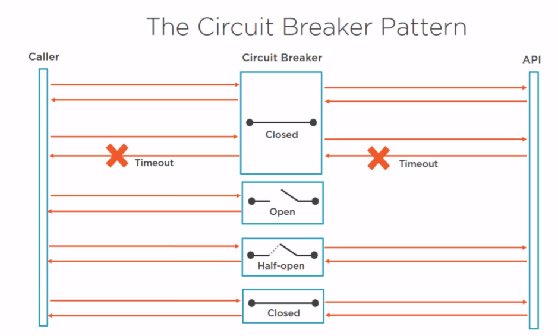
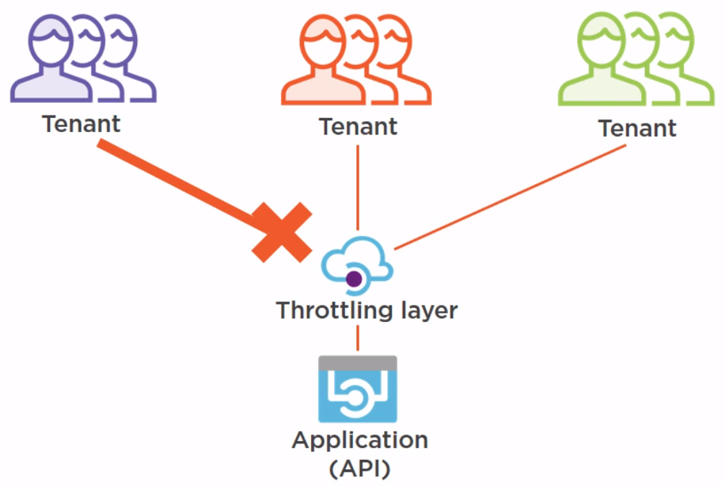

Azure Design Pattern
Published: May 01, 2020
Tags: cloud, architecture
Category: ComputerScience
Just like programming, for many technical challenges for using cloud and Azure there are best practices. We call these best practices as Design Pattern. This blog introduce these design patterns and also discuss relevant tools on Azure.
Table of Contents
- Introduction
- Data Management and Performance
- Event sourcing
- Sharding Pattern
- Static Content Hosting Pattern
- The Cache-aside Pattern
- CQRS pattern
- Availability and resilience
- Circuit Breaker Pattern
- Compensating Transaction Pattern
- Health Endpoint Monitoring Pattern
- Queue-based load levelling pattern
- Retry pattern
- Throttling Pattern
- Design and Implementation
- External Configuration Store Pattern
- Federated Identity Pattern
- Gatekeeper Pattern
- Runtime Reconfiguration Pattern
- Valet Key Pattern
- Resources
Introduction
We categorize the design patterns into followings:
Design and Implementation
- External Config Store
- Federated Identity
- Gatekeeper
- Runtime Reconfiguration
- Valet Key
Data Management and Performance
- Automatic Scaling
- Cache-aside
- CQRS
- Event sourcing
- Sharding
- Static content hosting
Availability and resilience
- Circuit breaker
- Compensating transaction
- Health endpoint monitoring
- Queue-based loading levelling
- Retry
- Throttling
Data Management and Performance
Event sourcing
The problem with storing the current state of the data
- direct CRUD operations slow down Performance
- data conflicts
- shaping data is difficult
The Event Sourcing Pattern

Things to consider:
- Get the current state by replaying events for an entity (id)
- Event sequence
- Event version
- Backup/restore/retention
- Append only
- Lag in publishing and processing events will cause eventual consistency
- Event consumers should only process events once
- Event sourcing is complex to implement
Possible framework: NEventStore -> open source event store
Sharding Pattern
The problem with having a single database
- scaling your database up (more resources) isn't sufficient
- data needs to be stored in specific geographics regions
Possible framework: Elastic DB Tools for Azure
Static Content Hosting Pattern
When to use this pattern:
- increase application Performance
- decrease resource costs
- increase content availability
Things to consider:
- design a deployment strategy - for application and content
- should only be accessible to the target audience
- use https where possible
- secure the content (valet key token)
- for more advanced capability - use a content delivery network (CDN)

Azure CDN
- Azure CDN profile
- Azure blob storage
- website
- points of presence (POP)
The Cache-aside Pattern
Pick the right data to be cached
- simple data
- data that is needed often
- and doesn't change often

Things to be considered:
- Consistency isn't guaranteed by the pattern
- data can be changed by other processes
- most caches have expiration policies
- balance between performance and consistency
- to optimize performance, pre-populate the cache
- and pick when data to pre-populate
About Azure Redis Cache
- cache-as-a-service
- in-memory data structure store
- recommended cache to use with Azure
- based on the open source redis platform
- highly available (99.9%)
- key/value structure
- publish/subscribe
- premium features
- data persistence
- redis cluster
CQRS pattern
The problem with mixing reads and writes
- simulaneous transactions lead to data contention and conflicts
- services and data sources and expensive to scale
- security isn't granular

CQRS pattern looks like following:

Availability and resilience
Circuit Breaker Pattern
- Non-transient failures
- Retrying will waste resources
- Waiting on a timeout also wastes resources

Can change the state to half-open:
- Amount of errors
- Type of errors
- After a predetermined time
Open source library -> polly: https://github.com/App-vNext/Polly/wiki/Circuit-Breaker
Compensating Transaction Pattern
reverting failed steps in distributed system is difficult

Health Endpoint Monitoring Pattern
Technical challenges:
- Monitoring tools are too simple
- The system doesn't provide enough information

Possible solutions:
- Azure Monitor
- Azure Advisor
- Azure Resource Health
- Azure Network Watcher
- Security Center
- Application Insights
- Operation Management Suite
Queue-based load levelling pattern
The problem with calling services directly
- Not scalable
- Diminish availability
- Growing costs
Possible solution: Azure storage queue
Retry pattern
Azure storage has retry policy by default
Throttling Pattern

- To handle sudden increases in traffic
- To guarantee application uptime
- To prevent specific users or tenants from overloading the application
Possible solution: API management
Design and Implementation
External Configuration Store Pattern
Technical challenges:
- Configuration is part of the deployment
- Multiple applications use the same configuration
- Hard to control access rights
When to use pattern
- Share configuration
- Manage configuration centrally
- Audit configuration access
Azure Key Vault
- Stores (Certificates, Keys, Secretes)
- Logging
- Highly available
- Backed-up
Federated Identity Pattern
Why:
- Single sing-on
- Authenticate 'external' users B2B & B2C
- Different tenants, different IDPs
Azure Active Directory
- Identity as a service
- Authentication
- Multi-factor authentication
- Advanced threat detection
Gatekeeper Pattern
Azure Gateway -> only expose things necessary

Things to consider:
- Sensitive information, in a high security environment
- Distributed system where you need centralized filtering and monitoring
- However, performance impact of gateway may be high
Runtime Reconfiguration Pattern
Things to consider:
- External configuration
- Get changes: use the hosting environment to subscribe to changes; poll for changes
- Apply changes: apply changes at runtime; restart only when needed
.net core has the support
Valet Key Pattern


Resources
https://github.com/bmaluijb/CloudDesignPatterns
https://docs.microsoft.com/en-us/azure/architecture/patterns/
Written by Binwei@Singapore